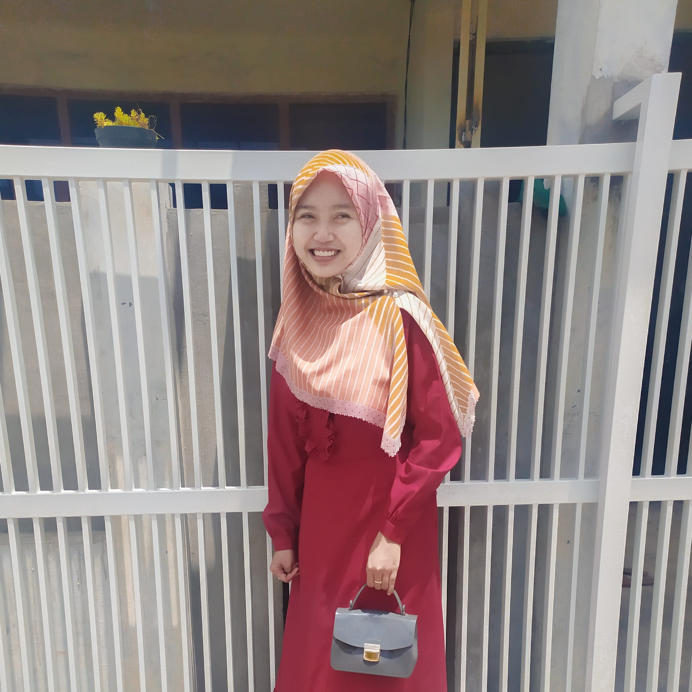

About Me
Hai, Saya Dini Naylul Izzah biasa dipanggil dini. Saya lahir pada tanggal 2 Desember tahun 2002 di Malang. Saat ini saya berdomisili di Malang tepatnya di Desa Ampeldento Kecamatan Karangploso.
Saya sedang menempuh pendidikan S1 Sistem Informasi Fakultas Teknologi Informasi di Universitas Merdeka Malang. Pada program studi ini, saya mendapatkan mata kuliah mengenai jaringan, pemrograman, analisa dan desain, hingga bidang bisnis digital. Sehingga saya dapat menguasai satu dan lain hal mengenai mata kuliah yang diajarkan.
Pengalaman saya dalam bidang IT yaitu mampu merancang, membangun, dan mengembangkan software berbasis web beserta layanan dan fasilitas berjalan di atasnya. Berasal dari pengalaman praktek kerja di sebuah instansi yang mewajibkan pembuatan software berbasis web. Selain itu, saya juga memiliki pengalaman di bidang digital marketing. Hal tersebut berasal dari pengalaman saya dalam memanajemen 4 bisnis saya yang bergerak di bidang online. Saya mampu bertanggung jawab, mampu bekerja dalam tim, inovatif dan kreatif.